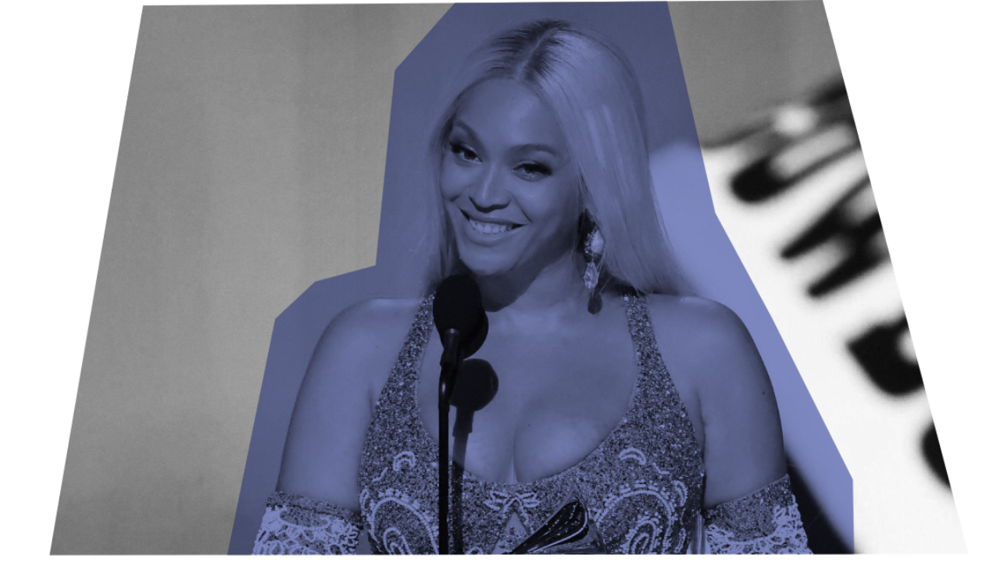
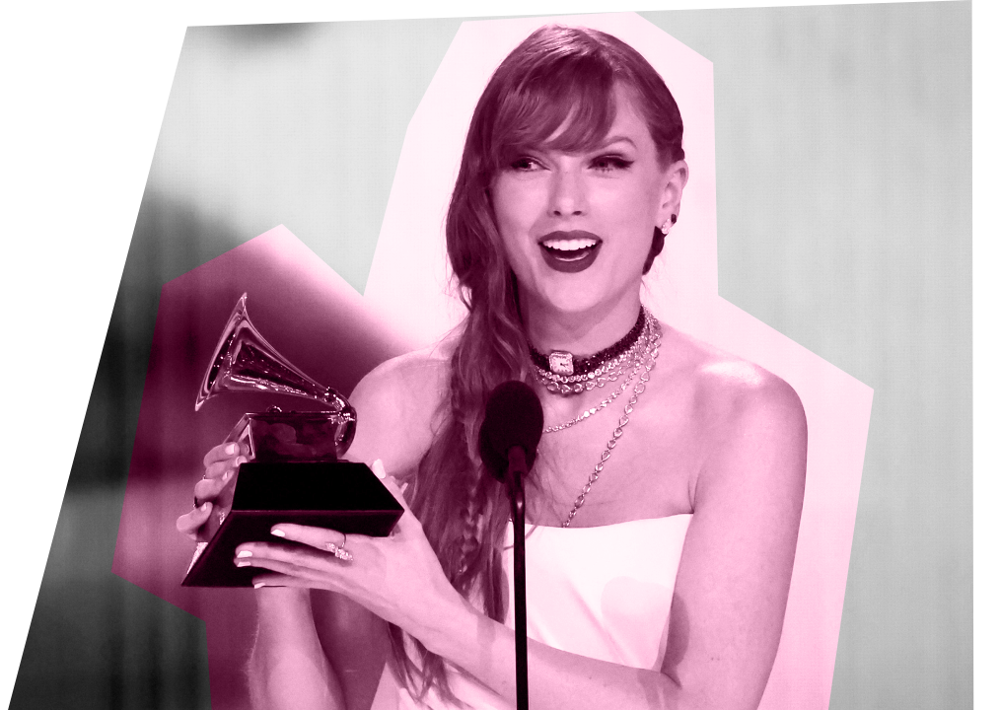
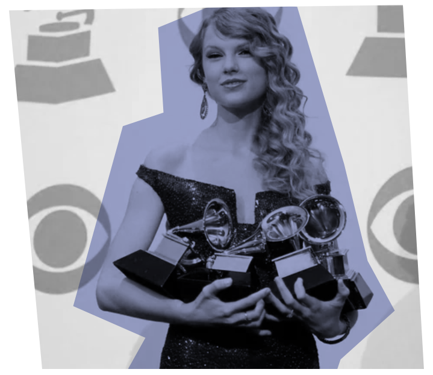

La categoría de Álbum del Año se ha consolidado como la más importante dentro de los Grammys, no premia una canción en particular o al artista, sino que a un conjunto de canciones que se reúnen en un solo proyexto. Según la misma Academia, lo que busca es reconocer "logros artísticos, habilidad técnica y excelencia general en la industria discográfica, sin considerar ventas, posición en listas, ni críticas". O sea, en teoría, el premio se basa en una valoración por parte de los miembros de la Academia que se debe realizar sin influencias externas.

En el siguiente gráfico se pueden observar a todos los nominados en esta categoría de los últimos 25 años, con este, podemos ver como ha cambiado el criterio con el paso del tiempo. Es evidente que en los primeros años de los 2000 la categoría era mucho más variada en torno a tipos de música, podríamos decir que destacan géneros como el Rock o el Rap, pero igualmente la repartición es bastante equitativa. Empezando el 2008, y de forma mucho más evidente a partir del 2019, podemos ver como el Pop comienza a tomar cada vez más fuerza dentro de la categoría, siendo la mayoría de los nominados parte de este género. Esto puede ser una consecuencia directa de la incorporación de las descargas digitales y sitios de streaming en las listas Billboard en 2005 y 2012, respectivamente, ya que la música que era considerada más popular dejó de depender únicamente de lo que sonaba en la radio y quedó en las manos de la persona promedio.
De todas formas, a pesar de la gran cantidad de espacio que usa el Pop dentro de la categoría, el aumento en la cantidad de nominados realizado en el año 2018 ha sido beneficioso para los otros géneros ya que, tal como se puede ver en el gráfico, junto al Pop también hay proyectos de Rock, R&B, Soul, Alternativo y, hasta Jazz. Igualmente, a pesar de la variedad, no podemos ignorar que un grueso de la categoría está compuesto por el Pop, lo que es aún más evidente si miramos a los ganadores.
Al ver a los ganadores de la categoría en los últimos 25 años es evidente que, a pesar del aumento en el número de nominados y los generos presentes, existe una preferencia por los proyectos Pop por sobre los otros. Muchas veces, esto puede ser porque efectivamente el disco se encuentra entre los mejores del año, como es el caso del último ganador "Cowboy Carter" de Beyoncé que en el sitio Metacritic, dedicado a sumar todas las críticas especializadas de un proyecto, tiene un puntaje de 91/100, poníendolo en el top 5 del 2024. Pero, como se podría esperar, la mayoría de las veces esto no se cumple, tal como ocurrió el año anterior con "Midnights" de Taylor Swift que, en el mismo sitio, cuenta con un puntaje de 85/100, el cual sigue siendo bueno, pero está por debajo de 3 de los nominados, dos de ellos ("Guts" de Olivia Rodrigo y "The Record" de Boygenius) siendo parte del top 10 del año.

Esto no significa que los miembros de la Academia no estén premiando lo que, tal vez, ellos consideran excelencia, pero si sugiere una creciente influencia de factores externos en sus decisiones. El predominio del Pop, cuyo nombre proviene literalmente de "popular", evidencia que los discos más exitosos en ventas tienen más oportunidades de ser reconocidos, a pesar de que la propia definición del premio excluye esos criterios.
En definitiva, se puede decir que Álbum del Año ha pasado de ser una categoría que representaba una selección variada de excelencia musical a reflejar, cada vez más, las tendencias del mercado. Los Grammys, que alguna vez fueron un símbolo de reconocimiento artístico independiente del éxito comercial, parecen haber cedido terreno ante la popularidad, lo que pone en duda si aún cumplen su propósito original: premiar la verdadera excelencia musical.
Dentro de este panorama, se incluye lo que significan la lista Billboard Hot 100 respecto a las nominaciones de los premios Grammy. Se puede ver que a comienzos de los 2000, la viralidad y la popularidad de un artistas si pudo influir en la nominación y premiación de los artistas. Por ejemplo, la fama de OutKast comenzó mucho antes de ser nominados y, posteriormente, ser galardonados en 2002 a Álbum del Año. Sin embargo, a medida que la viralidad y el uso de las tecnologías aumentó, si se puede apreciar mayores coincidencias respecto a cuantas veces los artistas estuvieron presenten en la lista Billboard y eventualmente fueron nominados y galardonados por los premios Grammy. Un ejemplo de constancia en la popularidad y premiación es Taylor Swift, quien se ha mantenido en las listas desde el año 2006 hasta la actualidad sin desaparecer ningún año.
Taylor Swift muestra claramente cómo la popularidad, la viralidad y el impacto cultural influyen directamente en las nominaciones y premios de galardones como los Grammy. Pasando de ser una artista de la música country a ser uno de los nombres más conocidos de la industria musical en la última década.
La popularidad y visibilidad la lleva a transformarse en un icono actual. Taylor Swift fue nombrada Persona del Año por la revista Time en 2023 y recibió el galardón de Mujer de la Década en los Billboard Women in Music en 2019. Su influencia es tan grande que sus composiciones son objeto de estudio en universidades.
La visibilidad y su éxito comercial se correlaciona con su éxito en los Grammy. La cantante estadounidense ha ganado 14 premios Grammy y ha recibido 58 nominaciones, además de ser la primera y única persona en la historia de los premios en ganar en la categoría de Álbum de Año 4 veces. Históricamente, sus mayores logros han coincidido con momentos de gran impacto comercial y un cambio de estilo.

El álbum Fearless (2008) le dio el premio a Álbum del Año en 2010. En ese momento, destacó por ser la artista más joven en haber ganado ese premio. Otro álbum que destacó fue 1989 (2014), el cual marcó un giro hacia el pop. Este disco vendió 1.28 millones de copias solo en Estados Unidos y le hizo ganar el Álbum del Año y Mejor Álbum Pop en 2016.
Su proyecto de regrabar sus primeros seis álbumes, conocido como los "Taylor's Version", fue un acto de protesta contra su antigua compañía, pero también le otorgó más dinero, más potencia y aún más visibilidad. Este impulso continuo de popularidad la llevó a ganar el premio a Mejor Videoclip por la regrabación "All Too Well: The Short Film" en 2023.

Por un lado, algunos creen que el éxito de Swift y su reconocimiento en los Grammy se debe más al impacto cultural que genera y a su conexión con su fans. Por otro lado, los y las swifties, creen que la cantante tiene un talento superior. Taylor Swift, luego de pasar por una época country, adaptó su estilo, volviéndolo más accesible al público.
Su influencia demuestra que, en la música actual, la viralidad no solo es una consecuencia del talento, sino un factor determinante que amplifica la visibilidad, dominar las representaciones culturales y, finalmente, lograr el reconocimiento, como lo es un premio Grammy.